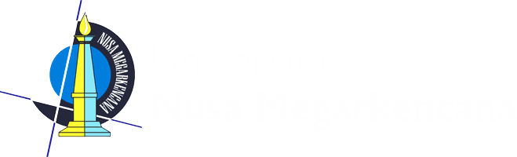

Fakultas Teknik dan InformatikaProgram Studi Sarjana Teknik SipilProgram Studi Teknik Sipil Universitas Nusa Megarkencana
Menyiapkan sarjana teknik yang terampil dan profesional dalam merencanakan, merancang, dan membangun infrastruktur untuk pembangunan berkelanjutan.
Belajar teknik sipil dari teori hingga praktik lapangan.
Program Studi Teknik Sipil UNMEKA mempersiapkan lulusan yang mampu merencanakan, merancang, dan membangun infrastruktur.
Profil Program Studi
Pembelajaran memadukan teori dan praktik lapangan pada lima bidang utama teknik sipil, dibimbing dosen bergelar Magister Teknik.
RPS Mata Kuliah
Rencana pembelajaran setiap mata kuliah.
Lihat RPSKerja Praktik dan Tugas Akhir
Alur, syarat sidang, dan dosen pembimbing.
SelengkapnyaInformasi akademik terbaru.
Informasi seputar perkuliahan, tugas akhir, dan penerimaan mahasiswa baru.
Pengumuman di atas adalah data peraga; pengumuman resmi diunggah oleh admin program studi.
Berita terbaru.
Kegiatan, prestasi, dan kabar terbaru dari Program Studi Teknik Sipil.
Lowongan kerja dan magang.
Peluang kerja dan magang bidang teknik sipil untuk mahasiswa dan alumni.
Lowongan di atas adalah data peraga; lowongan resmi diunggah oleh admin program studi.
Mitra dan ekosistem universitas.
Lembaga dan perusahaan yang bekerja sama dengan Universitas Nusa Megarkencana.